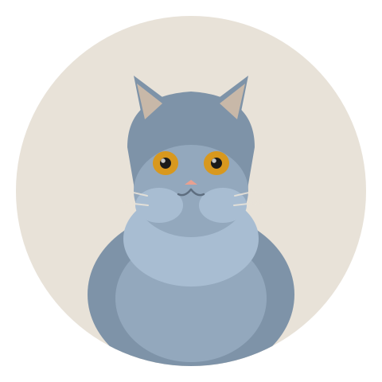

The cat that looks like a plush toy, feels like a warm brick, and has a personal-space policy stricter than an airline. | 2026-07-29 · MeltPet · 7 min read
✍️ By MeltPet Editorial Team Feline care researcher and pet health writer. 5+ years analyzing breed-specific care requirements and health data.
✅ Veterinary sources reviewed by MeltPet Team All health claims cross-checked against peer-reviewed veterinary sources. See 📚 Sources at the bottom of this guide.
Last updated: 2026-07-29

The densest coat in the cat world — and a face that launched a thousand Instagram accounts.
You've Seen This Cat. It's the One in Every Cat Food Commercial.
The British Shorthair is arguably the most recognizable cat breed on Earth — or at least the most photographed. The round face. The copper-orange eyes. The dense blue-gray coat that looks like it was carved from a single piece of velvet. The cheeks so plush and substantial that the breed standard uses the word "jowly" as a compliment. This is the Cheshire Cat from Alice in Wonderland, the inspiration for Puss in Boots' face, the cat that launched a thousand premium cat food ads. It looks like a teddy bear that someone brought to life through a combination of excellent breeding and minor wizardry.
People meet a British Shorthair and want one immediately. The wanting is entirely understandable. The problem is that what they want — a cuddly lap cat who loves being held — is almost never what they get. The British Shorthair is a breed defined by paradox. It looks like the softest thing you've ever seen. It does not want you to pick it up. It has the face of a creature that wants kisses. It would prefer that you respect its personal space. It follows you from room to room like a loyal dog. It will sit exactly 12 inches away from you for 14 hours a day and consider this arrangement perfect.
This is not a cold cat. It's a cat with boundaries. If you respect them, you get one of the most devoted, unflappable companions in the feline world. If you don't, you get a cat-shaped void that spends a lot of time under the bed and looks at you like you've committed a breach of etiquette.
Roman Cats, Street Cats, Show Cats
The British Shorthair's origin story is genuinely ancient. When the Romans invaded Britain, they brought cats — Egyptian domestic cats, the ancestors of basically every shorthaired cat in Europe — to control rodents in their encampments. Those cats stayed. For roughly 1,600 years, they interbred freely, developing into a hardy, thick-coated, robust street cat uniquely adapted to the cold, damp British climate. They weren't a breed. They were just... the cats of Britain.
In the late 1800s, a man named Harrison Weir — an artist, cat enthusiast, and the guy who basically invented the modern cat show — decided these sturdy street cats deserved recognition. He wrote the first breed standard, organized the first cat show at the Crystal Palace in 1871, and exhibited a blue shorthair that won Best in Show. The breed was officially born — not from aristocratic fancy but from the London alley cat, refined and standardized. That origin matters because it explains everything about the British Shorthair's personality. This is not a delicate, nervous, selectively-bred-for-appearance cat. It's a former street cat with a pedigree. It's tough, adaptable, and deeply unimpressed by things that would send a more high-strung breed into a panic.
During both World Wars, the breed nearly went extinct. Breeders rebuilt it by outcrossing to Persians, Russian Blues, and French Chartreux — which is where the modern British Shorthair gets its rounder face and plusher coat compared to its working-class ancestors. The Persian outcross also introduced the gene for polycystic kidney disease, a problem reputable breeders have spent decades trying to breed back out.
Blue Is Famous. But They Come in Colors You Wouldn't Believe.
The "British Blue" — a solid blue-gray cat with copper eyes — is the archetype, the one everyone pictures. But the breed standard recognizes over 100 color and pattern combinations. Solid colors (black, white, chocolate, lilac, cinnamon, fawn). Tabby patterns in classic, mackerel, and spotted. Tortoiseshell and calico. Colorpoint — the Siamese-style dark points on a pale body, called "British Colourpoint" in the UK. Silver and golden tipped coats where each hair is pale at the base and dark at the tip, giving the cat an almost luminous shimmer.
The body type is consistent regardless of color: medium to large (males 9–17 lbs, females 7–12 lbs), with a broad chest, short thick legs, and a rounded head with full cheeks — more pronounced in males, who develop impressive jowls as they mature. The eyes are large, round, and widely set, typically copper or deep orange in most colors, though some patterns allow green or blue eyes. The coat is what people remember: dense, plush, and crisp, with individual hairs thick enough that the coat stands slightly away from the body rather than lying flat. When you run your hand over a British Shorthair, the coat springs back. It's the most textured coat in the cat world — the breed standard calls it "crisp" and "broken" — and it's one of the few cat coats that feels like what it looks like.
One thing people don't expect: British Shorthairs mature slowly. Really slowly. A kitten looks like a kitten for about six months, then enters an awkward adolescent phase that lasts until age 2, and doesn't reach full physical and mental maturity until 3–5 years old. A three-year-old British Shorthair is still, developmentally, becoming itself. This is the opposite of breeds like Bengals or Siamese that are fully cooked by 18 months. The slow maturation is part of the breed's calm, deliberate character — nothing about a British Shorthair is rushed, including growing up.
The Personality: A Cat Who Loves You on Its Terms
What Living With One Is Actually Like
British Shorthair personality traits — expectations vs. actual experience across 6 key dimensions
Affection
"A cuddly teddy bear cat!"
Loyal, devoted, and present — but physical affection is on the cat's terms. A British Shorthair will follow you room to room, sit on the armrest next to you, and sleep at the foot of your bed. It will not melt into your arms, it will not seek out your lap, and it will almost certainly not enjoy being picked up. The breed's signature move is the "companionable sit" — they park themselves exactly one cushion away from you and radiate contentment. This is not aloofness. It's the feline equivalent of sitting at the same pub table as someone for 40 years without needing to fill every silence with conversation. If you need an actively cuddly cat, get a Ragdoll. If you're okay with a cat who loves you steadily and quietly from armrest distance, this is your breed.
Energy
"Lazy cat, right?"
Low to medium. Not zero. A British Shorthair kitten has normal kitten energy — zoomies, toy chasing, inadvisable climbing — but it drops off sharply after age 2. An adult British Shorthair is perfectly happy with a few short play sessions per day and otherwise wants to lounge, observe, and conserve energy for important tasks like blinking slowly at you from across the room. This is one of the few breeds genuinely suited to apartment living without requiring extensive environmental enrichment — though it still needs play, stimulation, and interaction. "Low energy" doesn't mean "neglecttable." It means "won't destroy your apartment out of boredom."
Vocalization
"Quiet cat?"
Genuinely quiet. British Shorthairs have a soft, almost apologetic meow — not the operatic wailing of a Siamese or the insistent chirping of a Bengal. They communicate more through presence than sound. A British Shorthair will sit in front of its empty food bowl and stare at you for 20 minutes rather than meow. If you're not paying attention, it might — might — emit a single, dignified chirp. This is a breed for people who like cats but don't like being yelled at by cats.
Intelligence
"Are they smart?"
Smart in a calm, observational way rather than a busy, problem-solving way. A British Shorthair isn't going to figure out how to open your cabinets or dismantle your puzzle feeder in 45 seconds. It's going to watch you, learn your routine, and position itself exactly where you'll be in 20 minutes. The intelligence is social and spatial — reading the household, knowing who's approachable and when, never being in the wrong place at the wrong time. This is a cat that navigates your home like a diplomat, not a hacker.
Adaptability
"Will they handle change?"
Better than most cats. The British Shorthair's street-cat ancestry produced a breed that takes new situations in stride — new furniture, new apartments, new people, even new pets, as long as introductions are gradual. They don't hide for three days when you move. They investigate, assess, and within 24 hours are acting like they've always lived there. This adaptability has limits — they need routine and don't thrive in chaotic households — but compared to the nervous-system reactivity of breeds like Bengals and Abyssinians, the British Shorthair is a boulder in a stream. Things flow around it. It doesn't move.
Independence
"Will they be okay alone?"
Better than most cats, but not indefinitely. A British Shorthair can handle a standard workday without distress — no separation anxiety, no destructive behavior, no revenge-peeing on your pillow. But two days alone with an automatic feeder is not okay for any cat, and this one will make its displeasure known by ignoring you for approximately the same duration you were gone before resuming normal operations. The breed's independence is emotional, not practical — they don't need constant reassurance, but they do need a human who comes home every day.
The Heart and the Kidneys: What Breeders Don't Always Mention
British Shorthairs are generally a healthy breed with a lifespan of 12–20 years. But two genetic conditions run in the breed, and buying from a breeder who doesn't screen for both is gambling with a decade of your cat's life.
Hypertrophic cardiomyopathy (HCM) is the most common heart disease in cats and the leading cause of sudden death in apparently healthy young adult cats. The British Shorthair is among the breeds with elevated risk. HCM thickens the heart muscle until the chambers can no longer fill properly — the heart works harder, the walls thicken further, and eventually the cat goes into heart failure or throws a clot (saddle thrombus) that paralyzes the hind legs. The disease can progress silently for years. Annual echocardiograms — cardiac ultrasounds performed by a veterinary cardiologist — are the only reliable screening method. A breeder who says "my cats are healthy, I don't need to scan" is a breeder you walk away from.
Polycystic kidney disease (PKD) was introduced to the breed through Persian outcrosses in the mid-20th century. Affected cats develop fluid-filled cysts in their kidneys, sometimes from birth, that grow over time and eventually destroy kidney function. There's no treatment and no cure — just management of chronic kidney disease when the cysts eventually overwhelm the organs. The good news: PKD is caused by a single dominant gene, and a DNA test ($40–60) identifies carriers definitively. Any reputable breeder tests all breeding cats and doesn't breed carriers. Ask to see the PKD test results. If the breeder seems confused by the question, the kittens aren't tested, and neither are the parents.
A third concern that's less dramatic but far more common: dental disease. British Shorthairs have a slightly compressed facial structure that predisposes them to gingivitis and periodontal disease. Annual dental cleanings are more likely with this breed than with longer-muzzled cats, and the cost ($300–700 per cleaning under anesthesia) should be factored into your budget. Daily tooth brushing with enzymatic cat toothpaste — started in kittenhood — is the single most effective prevention measure and costs about $8 a year.
Finally: obesity. The British Shorthair's cobby, muscular build means an extra pound looks normal for months before it becomes obvious. Combined with the breed's low-energy temperament and love of food, this is the most common health problem in the breed by raw volume. An obese British Shorthair is at elevated risk for diabetes, arthritis, urinary tract disease, and a shortened lifespan. The prevention is simple and incredibly difficult for owners to execute: measure the food, don't free-feed, and ignore the cat's protests. A British Shorthair will act like it's starving at all times. It is not. It is just a convincing actor.
What It Actually Costs
Getting one. A well-bred British Shorthair kitten from health-tested (HCM-echocardiogram-clear, PKD-DNA-negative) parents runs $1,500–3,000 in the US. Blue is the most common color and typically the most affordable; rarer colors like chocolate, cinnamon, and silver tabby can push the upper end. A show-quality kitten from champion lines can hit $4,000+. Rescue British Shorthairs exist but are uncommon — the breed's popularity means most kittens go to pre-screened homes, and breed-specific rescues have waitlists that stretch for months. The British Shorthair is a popular target for backyard breeders who sell unregistered, untested kittens for $600–900. The kitten looks like a British Shorthair. It may even be lovely. But you're rolling the dice on HCM, PKD, and temperament in ways that can cost you thousands and heartbreak within 3–5 years.
Monthly costs. $60–95 baseline: high-quality cat food ($25–35 — this breed gains weight easily, so quality matters over quantity), clumping litter ($12–18), parasite prevention if the cat goes outdoors on a harness ($15–25), pet insurance ($20–35). The insurance is worth it for this breed specifically — HCM diagnostics (echocardiogram $300–500, repeat annually if diagnosed) and eventual heart medication add up fast. Dental cleanings at $300–700 per year average out to $25–58/month if you're setting aside money annually. First-year costs including spay/neuter, microchip, initial vaccinations, and basic supplies (litter box, carrier, scratching posts, bed) run $500–800.
The cost people don't budget for: the cat itself. Not the purchase price. The cat in your life — the one who won't sit on your lap, won't be carried, won't perform affection on demand. A British Shorthair who is exactly what it is (devoted, calm, present, physically reserved) and nothing more is priceless if that's the companion you want. If it's not, the purchase price is the smallest part of a 15-year mismatch.
Is This Your Cat?
You should get a British Shorthair if you want a calm, dignified, low-maintenance companion who will be in the same room as you for hours and never demand to be held. If you find the idea of a cat who sits next to you rather than on you charming rather than disappointing. If you're willing to screen breeders aggressively for HCM and PKD. If you live in an apartment and need a cat who won't climb the curtains or scream at 3 AM. If you appreciate that a cat who requires nothing from you except food, a clean litter box, and your consistent presence is not being cold — it's being exactly what 1,600 years of evolution in a damp island nation produced.
You should not get a British Shorthair if you want a lap cat. If you want a cat you can pick up and carry around. If you want a cat who greets you at the door and meows for attention. If the phrase "he shows his love by being in the same room" sounds like settling rather than a selling point. This is not a breed that performs affection the way a Ragdoll or a Maine Coon does. It's a breed that loves you steadily, quietly, and from approximately 12 inches away for 15 years. For the right person, that's perfect. For the wrong person, it's a constant low-grade disappointment that the cat — who is exactly what it's supposed to be — will never fix.
📚 Sources
Peer-reviewed veterinary research on HCM, PKD, and feline breed health in British Shorthairs.
Meurs, K.M., et al. (2005).A substitution mutation in the myosin binding protein C gene in ragdoll hypertrophic cardiomyopathy. Genomics, 90(2), 261–264. [Foundation for understanding feline HCM across breeds.]
Lyons, L.A., et al. (2004).The genetic basis of polycystic kidney disease in Persian and related breeds. Genomics, 84(6), 1087–1094.
Payne, J.R., Brodbelt, D.C., & Luis Fuentes, V. (2015).Cardiomyopathy prevalence in 780 apparently healthy cats in rehoming centres. Journal of Veterinary Cardiology, 17, S244–S257.
Sparkes, A.H., et al. (1996).Feline hypertrophic cardiomyopathy: a spontaneous large animal model of human disease. Cardiovascular Research, 31(4), 480–489.
Gough, A., & Thomas, A. (2010).Breed Predispositions to Disease in Dogs and Cats. 2nd ed. Wiley-Blackwell.